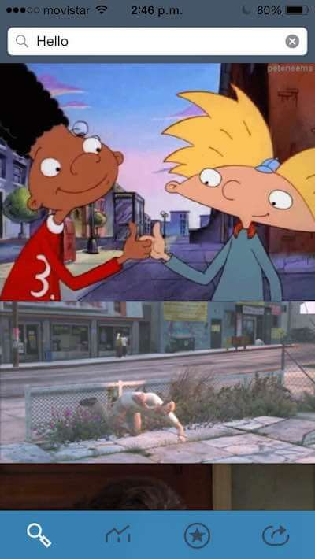
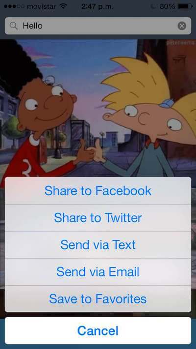
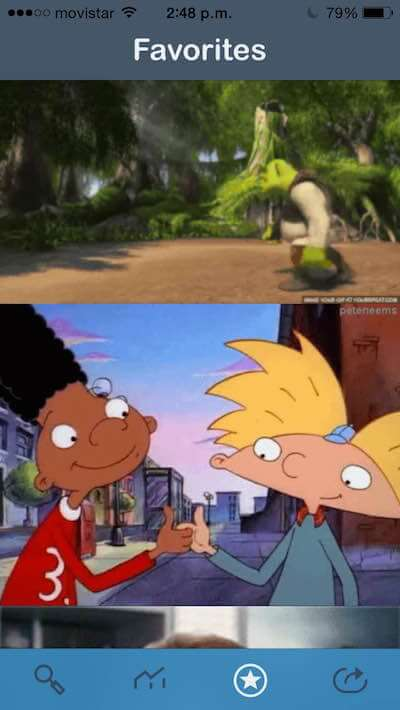
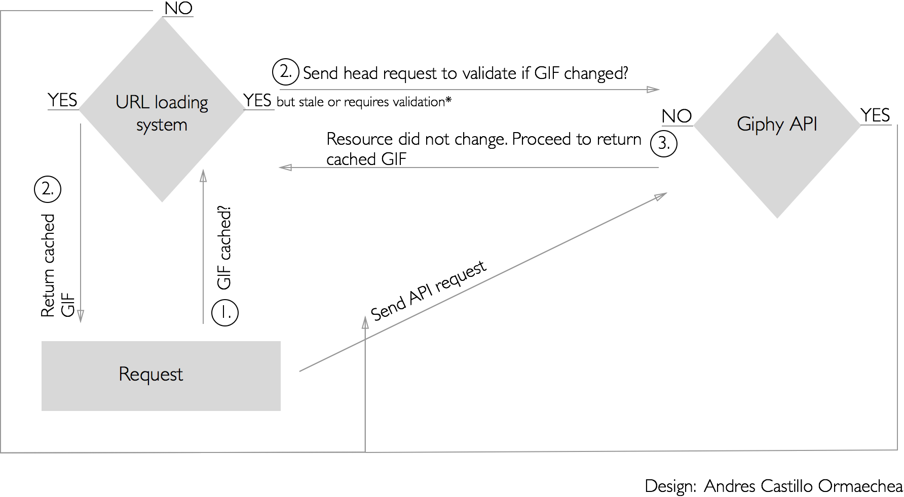

Projects
iOS GIF Search Engine
About:
iOS application for searching and sharing GIFs with your friends thru iMessage, Twitter, Facebook and Email.
Team & Time:
This application was built in 7 days as a final project for Mobile Makers iOS Academy in Chicago September 2013.
The team were two (2) iOS developers.
Key Features:
- Search GIFs powered by the top source for the newest and best GIFs (GIPHY.COM)
- Share GIFs to Facebook, Twitter, Text or Email.
- Discover trending GIFs around the world.
- Save your favorite GIFs for later.
Search GIFs

Share to Facebook, Twitter, Text or Email
Discover Worldwide Trends
Save to Favorites

Technologies
- Xcode
- Objective-C
- Giphy API
Social Sharing
Social sharing in the iOS GIF engine was possible using SLComposeViewController. We wanted the user to be able to share a GIF without leaving the app. SLComposeViewController presents a view inside the application so the user can create the post in the following implemented platforms:
- Text message
GIFs and Caching
The following diagram was designed to explain the caching implementation in the project and how it made it faster to render GIFs for a better user experience.
NSURL Protocol Cache Policy Request Diagram (HTTP & HTTPS)
